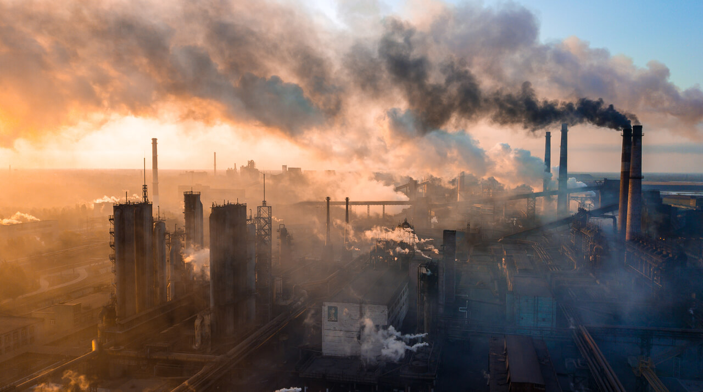

Contaminación del Suelo
La contaminación del suelo se origina por el uso excesivo de pesticidas, desechos sólidos y productos químicos. Esto afecta la calidad de los cultivos y la salud de los ecosistemas.

La contaminación del aire es causada principalmente por emisiones de vehículos, industrias y quemas agrícolas. Los contaminantes afectan la salud humana y el medio ambiente.
La contaminación del agua se produce por desechos industriales, plásticos y productos químicos. Afecta ecosistemas acuáticos y la salud de las personas.
<La contaminación del suelo se origina por el uso excesivo de pesticidas, desechos sólidos y productos químicos. Esto afecta la calidad de los cultivos y la salud de los ecosistemas.
La contaminación tiene efectos negativos en la salud humana, incluyendo enfermedades respiratorias, cardiovasculares y cáncer. Es crucial concienciar sobre su impacto.